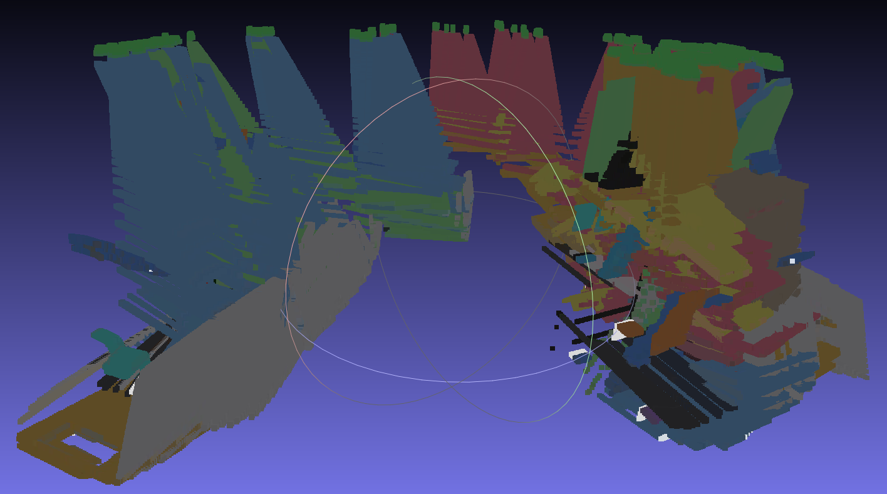
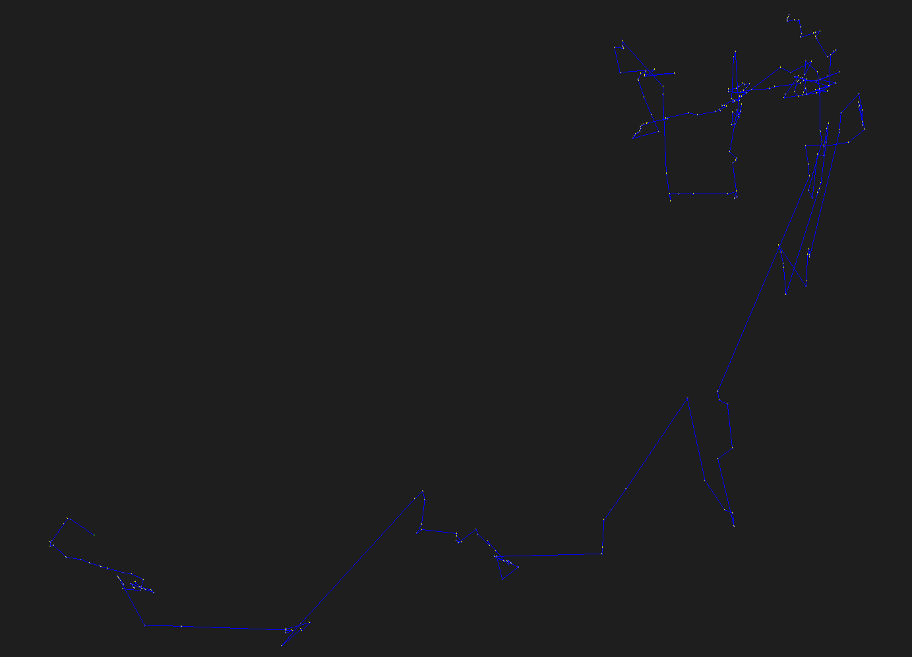
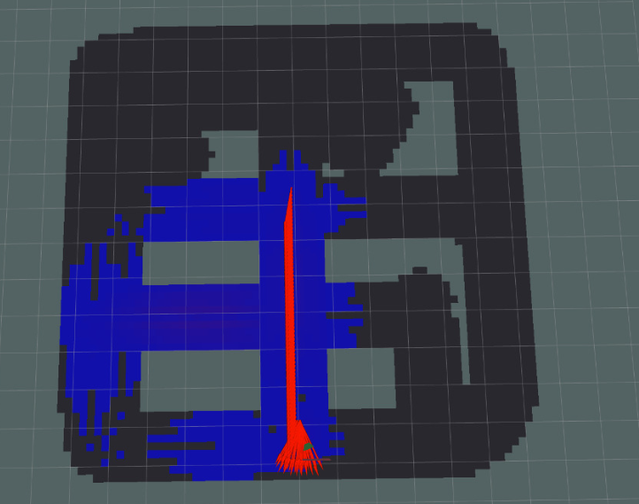

In Action
Simulation results





An autonomous UAV that explores GPS-denied indoor environments, reconstructs them in 3D with RGB-D SLAM, and localizes toxic gas concentrations — before any human steps inside.
Chemical plants, industrial accident sites, and confined storage facilities share two deadly traits: no GPS signal indoors, and the possibility of invisible toxic gas.
Satellite signals can't penetrate industrial structures. Conventional autonomous navigation fails the moment a robot crosses the doorway — it has no idea where it is.
Toxic gas leaks are invisible, odorless in many cases, and lethal in minutes. Sending a person in to assess the situation means risking a life to gather information.
SLAM gives the drone spatial awareness with nothing but an onboard camera. A gas sensor adds chemical awareness. Together: a full risk map of the unknown, with zero human exposure.
The perception pipeline runs in real time on every frame the drone captures, building and correcting its understanding of the world as it flies.
640×480 @ 10 HzThe onboard RGB-D camera streams synchronized color and depth images, giving every pixel both appearance and distance.
ORB / GFTTDistinctive keypoints — corners, edges, texture — are extracted from each frame. These become the landmarks the drone navigates by.
PnP + RANSACBy matching features across frames and solving the Perspective-n-Point problem with outlier rejection, the system computes exactly how the drone has moved.
bag-of-wordsWhen the drone revisits a place it has seen before, RTAB-Map recognizes it — creating a constraint that anchors the map against drift.
pose graph + frontiersLoop closures trigger global pose graph optimization, correcting accumulated error across the whole trajectory, while frontier-based exploration drives the drone toward unmapped space.
While SLAM maps the geometry of the space, a simulated gas sensor maps its chemistry — sampling concentration at the drone's position and painting it onto the spatial map.
c(p) gas concentration at position pA peak concentration at the sourcep−pₛ distance from the gas sourceσ spatial spread of the plumeGas concentration is highest at the leak source and decays exponentially with distance — the same dispersion behavior used in environmental engineering. The drone samples this field continuously as it explores.
Each sample is fused with the drone's SLAM-estimated position, so the concentration data lands in the right place on the 3D map. The result is a spatial chemical map: not just "gas detected", but "gas is here."



Node communication & middleware
Physics simulation
RGB-D SLAM & loop closure
Node logic & control
Live 3D visualization
# clone into your ROS 2 workspace cd ~/ros2_ws/src git clone https://github.com/Dsv9/slam-for-drone-using-RTAB.git # build cd ~/ros2_ws && source /opt/ros/jazzy/setup.bash colcon build --symlink-install && source install/setup.bash
ros2 launch drone_gas_core full_system.launch.py \
enable_avoidance:=true \
demo_avoidance_mode:=true \
enable_gas:=true
Supervised by Asst. Prof. Dr. Banu Kabakulak